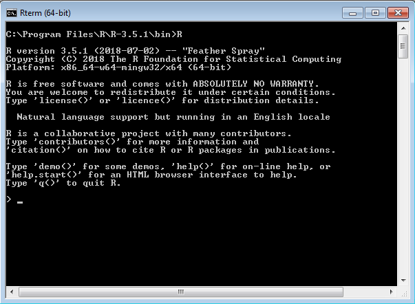

1.1 ¿Qué es R y RStudio?
R es un lenguaje y entorno para el procesamiento, visualización y análisis estadístico de datos. Ha sido creado en 1993 por R. Gentleman y R. Ihaka, ambos científicos del Departamento de Estadística de la Universidad de Auckland (Nueva Zelanda). Actualmente su desarrollo y mantenimiento está a cargo del R Core Team. El sitio oficial del proyecto es www.r-project.org
Figure .: Página oficial de R Project

Hoy en día, R es la lingua franca del procesamiento y análisis estadístico de datos, tanto en el ámbito académico como comercial dado que es gratiuto, multiplataforma, de código abierto (open source, liberado con licencia GNU/GPL). Esto lo convierte en un software muy potente y que expresa el estado del arte de los métodos estadísticos ya que la comunidad de usuarios contribuya constantemente con funcionalidades e implementaciones de nuevos métodos y técnicas estadísticas.
Al igual que su antecesor S, la flexibilidad y potencia de R se basa en su interfaz de comandos (CLI, del inglés command line interface ) que permite la ejecución de comandos de manera interactiva (en consola) o automática mediante scritps.
Figure .: Consola o terminal de Windows, Mac OS X y Linux corriendo la última versión estable de R

Figure .: Consola o terminal de Windows, Mac OS X y Linux corriendo la última versión estable de R
Existen algunos desarrollos de interfases gráficas (GUIs, del inglés graphical user interface), e.g. RCommander, Deducer, que ofrecen la posibilidad de, mediante menues y botones, ejecutar análisis relativamente simples minimizando la necesidad de escribir código.
Figure .: Interfase de R Commander

Por su parte, los entornos de desarrollo integrados (IDE por sus siglas en inglés integrated development environments) ofrecen un enfoque intermedio con menúes o funciones asistentes que facilitan algunas tareas generales (abrir archivos, carga de datos, exportar gráficos y resultados) pero dejando la codificación del análisis estadístico en manos del usuario mediante la ejecución de scripts. Entre estas alternativas se destaca RStudio ( www.rstudio.com ) el cual también es de código abierto (licencia GNU/GPL), multiplataforma y ofrece una versión gratuita.
Figure .: Interfase de RStudio